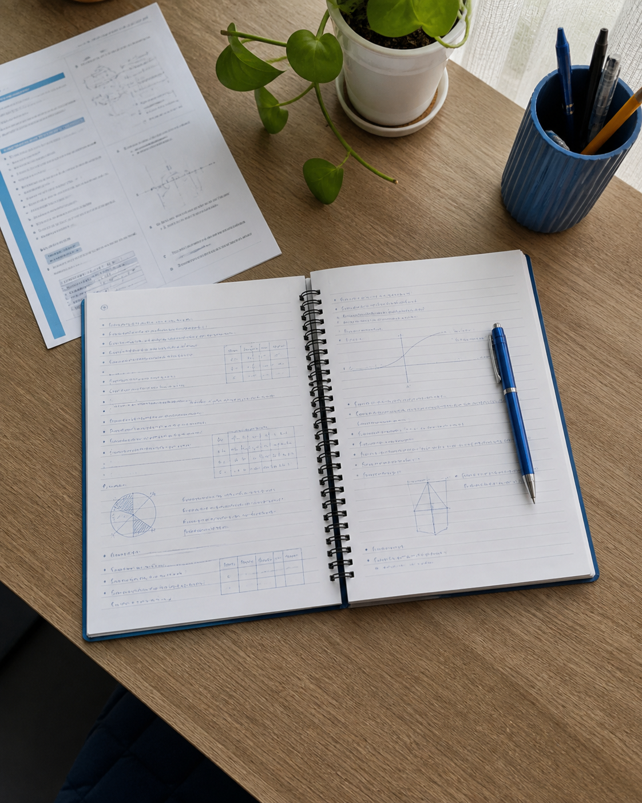

Descubra a ferramenta certa sem procurar em menus.
Escolha seu perfil e receba um guia simples para usar melhor a câmera do JOVI V70.
Sem login e sem cadastro.
A
EstudanteDigitalizar e extrair texto
B
IdosoFotografar com confiança
C
CriadorGravar sem perder o momento
Por que o assistente existe
Muitos recursos. Pouca orientação.
A câmera oferece dezenas de funções, mas a maioria das pessoas usa apenas o básico. O JOVI organiza os recursos por contexto e explica cada função com exemplos claros.
O problema
Menus complexos escondem recursos úteis como digitalização, OCR, estabilização e sugestões de iluminação.
A resposta
Um guia no navegador que reorganiza a experiência para Estudante, Idoso ou Criador.
Personalização
Qual uso combina mais com você?
Selecione uma opção. Você poderá trocar de perfil quando quiser.
Seu guia
Câmera pronta para você
Documento

Documento detectado
Simulação acadêmica da interface. Não acessa a câmera real.
Galeria
Suas demonstrações
As capturas ficam apenas nesta sessão do navegador.
Nenhuma captura ainda
Abra a demonstração e use o botão central para criar uma captura.
Como usar
Escolha um perfil. O guia recomenda apenas os recursos úteis para você.
Leia as orientações. Cada recurso explica o que fazer.
Teste a câmera. A demonstração simula a captura e a galeria.